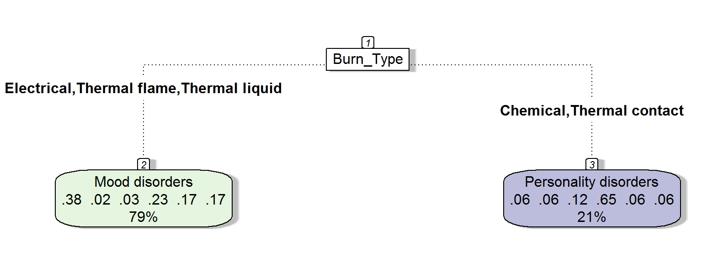

library(tidyverse)
library(knitr)Read in the contingency table from Table 6 of Adams, Locke, and Warner (2019).
library(readr)
burndat <- read_csv("burndat.csv")To run a \(\chi^2\)-test on this, we first need to convert it to a matrix:
burnmat <- burndat[-1] %>%
as.matrix()
rownames(burnmat) <- burndat$Diagnosis
burnmat %>%
kable()| Chemical | Electrical | Thermal contact | Thermal flame | Thermal liquid | |
|---|---|---|---|---|---|
| None | 1 | 0 | 1 | 0 | 2 |
| Mood disorders | 1 | 1 | 0 | 17 | 6 |
| Psychoactive substance-linked | 1 | 1 | 0 | 9 | 1 |
| Neurotic/stress/somatoform | 1 | 0 | 0 | 1 | 0 |
| Schizophrenia/schizotypal/delusions | 1 | 0 | 0 | 7 | 4 |
| Personality disorders | 7 | 1 | 4 | 11 | 3 |
Now the test:
chires <- chisq.test(burnmat) # just saving this so I can use later## Warning in chisq.test(burnmat): Chi-squared approximation may be incorrectchires##
## Pearson's Chi-squared test
##
## data: burnmat
## X-squared = 27.428, df = 20, p-value = 0.1236That p doesn’t drop below the magical 0.05, alas, so the pattern is likely under the null of independence. However, the cell counts are small, so the assumptions of the test aren’t satisfied. At this point many would use Fisher’s exact test; however, that would be Very Wrong since it assumes fixed marginals which does not hold here.
We could also have a look at standardised residuals and see if any are above 1.96 or below -1.96 (they have a standard normal distributation under the null).
round(chires$stdres, 2) %>% kable()| Chemical | Electrical | Thermal contact | Thermal flame | Thermal liquid | |
|---|---|---|---|---|---|
| None | 0.59 | -0.40 | 1.60 | -2.29 | 1.56 |
| Mood disorders | -1.83 | 0.09 | -1.54 | 1.51 | 0.64 |
| Psychoactive substance-linked | -0.68 | 0.92 | -0.96 | 1.47 | -1.08 |
| Neurotic/stress/somatoform | 1.42 | -0.28 | -0.37 | -0.16 | -0.71 |
| Schizophrenia/schizotypal/delusions | -0.68 | -0.74 | -0.96 | 0.21 | 1.28 |
| Personality disorders | 2.11 | 0.05 | 2.37 | -1.65 | -1.28 |
It looks like people with a PD dx are over represented in chemical and thermal contact burns than would be expected if dx and burn type were independent. Similarly, those with no mental health dx are under represented in the thermal flame type.
It’s a small dataset, but let’s plough on anyway and see what happens if we hand the data to a classification tree algorithm (from the rpart package).
First, we need to transform the contingency table into a long dataset with one row per observation (patient).
Pivot the frequencies data longer, so it’s one row per combination of dx and burn classification:
burnlong <- burndat %>%
pivot_longer(cols = -Diagnosis,
names_to = "Burn_Type",
values_to = "n")Here are the first 10 rows:
head(burnlong, 10) %>% kable()| Diagnosis | Burn_Type | n |
|---|---|---|
| None | Chemical | 1 |
| None | Electrical | 0 |
| None | Thermal contact | 1 |
| None | Thermal flame | 0 |
| None | Thermal liquid | 2 |
| Mood disorders | Chemical | 1 |
| Mood disorders | Electrical | 1 |
| Mood disorders | Thermal contact | 0 |
| Mood disorders | Thermal flame | 17 |
| Mood disorders | Thermal liquid | 6 |
Next, “uncount” this, so the frequencies expand to one row per observation - and a peek at the first 20 rows:
burnlonglong <- burnlong %>% uncount(weights = n)
head(burnlonglong, 20) %>% kable()| Diagnosis | Burn_Type |
|---|---|
| None | Chemical |
| None | Thermal contact |
| None | Thermal liquid |
| None | Thermal liquid |
| Mood disorders | Chemical |
| Mood disorders | Electrical |
| Mood disorders | Thermal flame |
| Mood disorders | Thermal flame |
| Mood disorders | Thermal flame |
| Mood disorders | Thermal flame |
| Mood disorders | Thermal flame |
| Mood disorders | Thermal flame |
| Mood disorders | Thermal flame |
| Mood disorders | Thermal flame |
| Mood disorders | Thermal flame |
| Mood disorders | Thermal flame |
| Mood disorders | Thermal flame |
| Mood disorders | Thermal flame |
| Mood disorders | Thermal flame |
| Mood disorders | Thermal flame |
Load the packages for classification trees.
library(rpart) # fits the model
library(rattle) # just for visualisationI’m curious to know if the diagnosis can be predicted by burn type.
res <- rpart(Diagnosis ~ Burn_Type, data = burnlonglong)
fancyRpartPlot(res, type = 5, caption = "")
Apparently so.
People with a chemical or thermal contact burns were most likely to have a PD dx (65% of cases with those burn types), whereas those with electrical, thermal flame, or thermal liquid burns were most likely to have a mood disorder (38% of cases with that type compared to 23% with a PD dx).
Note how the PD prediction is exactly what we spotted from the standardised residuals.
Those rows of six numbers on the leaves of the tree are proportions of dx, in alphabetical order, as per:
burnlonglong %>%
group_by(Diagnosis) %>%
summarise(n = n()) %>%
kable()| Diagnosis | n |
|---|---|
| Mood disorders | 25 |
| Neurotic/stress/somatoform | 2 |
| None | 4 |
| Personality disorders | 26 |
| Psychoactive substance-linked | 12 |
| Schizophrenia/schizotypal/delusions | 12 |
The single percentages are how many observations, total, are in the cell. For instance, the 21% is from 12+5 = 17 divided by the total number of observations, 81.
burnlonglong %>%
group_by(Burn_Type) %>%
summarise(n = n()) %>%
kable()| Burn_Type | n |
|---|---|
| Chemical | 12 |
| Electrical | 3 |
| Thermal contact | 5 |
| Thermal flame | 45 |
| Thermal liquid | 16 |
I’d be wary of generalising given this small dataset, but it gives a good sense of the main patterns visible in the sample.